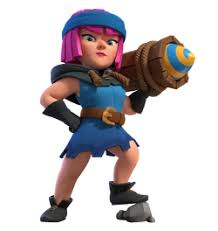
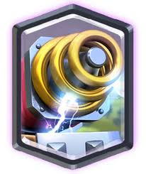
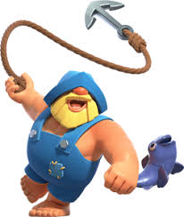

Physics
Does Clash Royale use realistic physics?
Mostly mechanics (things that are move)
Info about Clash Royale

This is your standard Clash Royale arena! It has a total of 548 playable tiles, but some arenas have 528 playable tiles. The idea of the game is to place troops in these tiles and attempt to destroy your opponents crown towers. Determining the dimensions of these tiles will be a crucial step in finding out if Clash Royale has realistic physics.
According to the following images a hog is approximately 1.8 tiles long. I did some research and found out that the hogs in Clash Royale are most likely "Domestic pigs" which vary in size from 90-180cm in length. On average they are 135 cm in length.

Through simple algebra I have deduced that one tile is approximately 75cm in length and width.
THERE IS AN EASTER EGG
Experiments
Kinematics
Distance and Displacement
Acceleration, Velocity, and Speed
A prince is placed onto the board. There is a 1 second delay before it starts moving at a speed of
xtiles/s before accelerating to a speed of ytiles/s a while later it encounters a hog rider after
crossing a bridge that was 2 tiles long and instantly comes to a halt to attack it. The hog rider
survives on 1 hp and runs past the prince causing the prince to chase it in the opposite direction.
The prince starts slow but accelerates to an increased speed before the hog rider meets the terrible fate
of being unalived by a tower. Following that the prince nimbly makes a 180 degree turn without losing speed.
The prince then continues to move at a constant velocity until it crosses the bridge and makes a sharp 90 degree
turn while maintaining the same speed it eventually collides with an enemy mortar bring it to a complete stop.
With the given information answer the following questions:
Vectors
Observe the movements of the hog rider in the arena. It travels at a constant speed but at an inconsistent direction. Thus creating 3 separate vectors which we can combine to find its average velocity and speed.
Observations
Momentum
While playing some games I noticed certain troops show signs of the law of conservation of momentum. These two troops demonstrated Newton's third law, the recoil law. When they launched their respective projectiles they would shift backwards a fraction of a tile (experience recoil).
Can you guess which ones?
If you guessed any of the following you would be correct!
 
Although there are cards that do follow the rules of physics there are certain ones that kind of ignore them.
The Fisherman!
This card is called the fisherman. It uses its hook and pull all cards towards itself using the same amout of force. However, this card completely ignores the fact that heavier units will have a higher force of friction so he just yoinks them all the same.
Conclusion
Throughout many hours of experimenting countless hours of observing and a few hours of actual research I have come to the comclusion that Clash Royale is very good at combining the laws of physics with an immersive game. Although there may be certain cards that just do their own thing, most of the game uses realistic physics.
That is if we ignore all the spells in the game because they are super random and if they were taken into account then half the game would stop following the laws of physics. So, for the sake of this project we will ignore those and I will put this in really miniscule writting. I will now fill the rest here with random text so it looks like a complete line under the intended text. While I'm at it I'll throw in the link to my chemistry project cause I'm bored the link is as long as you click the blue part it will work kinematics, dynamics, momentum, electric fields, magnetic fields, waves, sound, light.
Sources
links
https://www.dimensions.com/element/domestic-pig
https://clashroyale.fandom.com/wiki/Category:Troop_Cards
https://prezi.com/p/yoyyik8jmmre/the-physics-behind-clash-royale/
citations
Bryan. (2022, November 10). Domestic pig (sus domesticus) dimensions & drawings. Domestic Pig (Sus domesticus). https://www.dimensions.com/element/domestic-pig
Miles, S. (2025, June 17). The physics behind Clash Royale. prezi.com. https://prezi.com/p/yoyyik8jmmre/the-physics-behind-clash-royale/
Wiki, C. to C. R. (n.d.). Troop cards. Clash Royale Wiki. https://clashroyale.fandom.com/wiki/Category:Troop_Cards